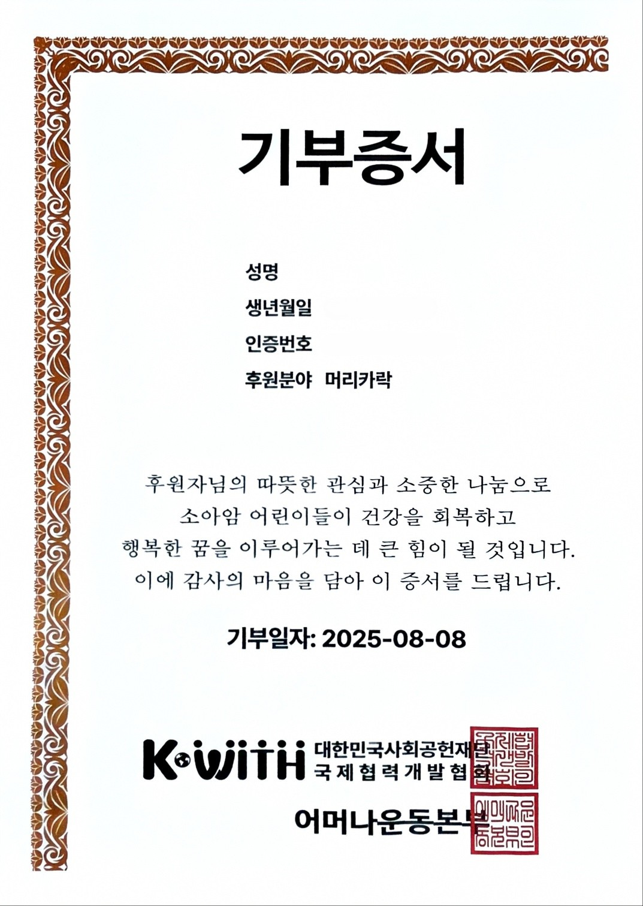

안녕하세요. 저는 다양한 경험을 통해 저만의 방향과 속도를 찾아가는 사람입니다.
저는 지금까지 여러 직업과 환경을 경험하면서 사람과 일, 그리고 삶을 바라보는 시각이 조금씩 달라졌습니다.
모든 경험이 좋은 결과로 이어진 것은 아니지만 그 과정에서도 배운 것은 것이 있고, 모든것이 모여 저를 만들었다고 생각합니다.
이 페이지는 저를 처음 만나는 사람에게 제가 해온 경험과 그 과정에서 배운 점, 앞으로 되고 싶은 모습을 소개하기 위해 만들었습니다.
제가 삶에서 추구하는 가장 궁극적인 목표입니다.
모든 노력이 반드시 좋은 결과로 이어지진 않아요. 하지만 성실함만 있다면 좋지 못한 결과에서도 배우는 것이 있고 성장한다고 생각합니다.
서로의 생각과 입장을 존중하고 배려하는 태도는 매우 중요하게 생각합니다. 가장 중요한건 내가 배려했다고 무조건 상대방도 나를 배려해야 하는 것이 아닙니다. 배려를 일방적인 기대가 아닌, 서로의 차이를 인정하는 태도로 바라보려고 합니다.
친구들과 재밌게 놀았습니다.
20대에 여러직업을 경험하면서 이전에는 알지 못했던 사회의 다양한 모습을 접했습니다.
그동안 경험을 통해 배웠던 것을 되돌아보고 부족한 부분을 채우며, 과거의 경험을 바탕으로 새로운 경험을 배우며 앞으로 나아갈 방향을 찾고 있습니다.
카페 창업에 도전해서 운영을 하면서 사람과 매장을 관리하며 생각보다 더 많은 시간과 노력이 들어가고 이상을 찾아가는 저에게 현실을 알려준 가장 값비싼 경험이었습니다.
처음 참여한 네트워크 유지보수 프로젝트에서 팀원들과 함께 지역 소방본부 서버실에 서버와 라우팅 장비를 추가 설치했습니다.
처음에는 의욕이 앞서 소통 부족으로 중복 작업과 일정 지연이 발생했지만 회의를 통해 작업 내용을 공유하고 협력하면서 업무를 원활하게 진행할 수 있었습니다.
5년을 길러오던 긴 머리를 기부하며 나눔에도 여러가지 형태가 있고 나의 작은 행동도 누군가에게 도움으로 다가갈수 있다는 값진 경험이었습니다.

서로 다른 생각과 입장도 존중하며 대화한다면 더 좋은 아이디어와 협력으로 이어질 수 있다고 생각합니다. 앞으로도 상대방의 이야기에 귀 기울이고, 서로의 차이를 인정하는 태도를 유지하려고 노력합니다.
같은 의미라도 어떤 단어와 표현을 사용하는지에 따라 다르게 전달될 수 있습니다. 그래서 말하는 것뿐 아니라 상대방이 어떻게 받아들일지도 생각하려고 노력합니다.
제가 맡은 일에 책임을 다하고, 다른 사람이 믿고 의지할 수 있는 사람이 되고 싶습니다.
무엇보다 제가 선택한 삶에 스스로 만족할 수 있는 사람이 되고싶습니다.